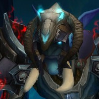

We're Recycled Content Just like World of Warcraft!
We are a progression focused guild on Bleeding Hollow US. We consider ourselves in the realm of "hardcore-casual" because we only raid a couple of nights a week but we expect our team to come prepared to slay dragons.
Open Raid Slots
These are our currently open positions. We prefer that all DPS are flexible in their damage-dealing specs, especially on a boss by boss basis. Tanks and Heals should also feel comfortable as DPS.
You're also welcome to talk to us if your class isn't listed below - we're flexible!
If you're any of these specs, hit us up on Discord!
 Brewmaster
Brewmaster Resto
Resto Affliction
Affliction Shadow
Shadow
Raid Details
- Two nights per week - Tuesday & Wednesday
- We raid from 8 PM Eastern until 11 PM Eastern.
- If we're close on a boss, we'll go slightly over our usual raid time to get more pulls in.
- We take a 7 minute break every hour we raid.
Raider Expectations
- Show up 10 to 15 minutes before raid. We pull at 8.
- Come fully enchanted with all consumables required for the raid.
- You will let Fluxflashor know if you cannot make a raid, will be late, or need to leave early.
- You'll run content when we aren't raiding to improve your gear where possible.
- Get in that weekly Mythic +10 Keystone!
Mythic+
Not interested in raiding but love running Mythic+? We're looking for more awesome people to join up as Mythic+ runners!
- Help the guild grow while finding consistent people to run M+ with.
- We may have temporary raid openings so if you're interested in raiding sometimes, you may be able to fill that spot!
- We'll take anyone interested in running them. Would especially love some extra tanks!
If you're interested, ask for an invite in-game to anyone online. Let them know you're interested in running M+ with the guild. Also be sure to join us on Discord.
Required Addons
Here are some other awesome addons that are not required but will help you greatly.
- Details! Damage Meter - By far the best damage meter now.
- SimulationCraft - /simc for those sexy import strings
- Angry Keystones (For M+)
- Method Dungeon Tools (For M+)
Raid Loot
- Bind on Equip items should be traded to the Guild Master. No exceptions.
- BoEs let us fund repairs, flasks, and feasts. It pretty much splits the value of the item up between everyone.
- Bind on Pickup items are yours if its an upgrade or untradeable.
- BoPs you do not need should be offered to the guild through the Personal Loot Helper addon.
Ready For Raiding
We don't ask you to bring much, but this is the bare minimum everyone is expected to have.
 60 BFA PotionsPrepot on pull and during lust. Don't be Scyndek, that's bad.
60 BFA PotionsPrepot on pull and during lust. Don't be Scyndek, that's bad. 60 BFA Health PotionsNo shared cooldown with those delicious Lock Rocks™. Chug em!
60 BFA Health PotionsNo shared cooldown with those delicious Lock Rocks™. Chug em! 1 Vantus RuneBecause sometime bosses suck and you need that extra boost.
1 Vantus RuneBecause sometime bosses suck and you need that extra boost. A Sense of HumorWe're bound to have a giggle.
A Sense of HumorWe're bound to have a giggle.
Get Duffd.
Find Us
Hit us up on Discord if you're interested in joining (#recruitment) or see what we're doing elsewhere.
Guild Leadership
The people you want to contact. All recruitment questions can go to Flux. Talk to us on Discord.
 FluxflashorGuild MasterHuman Resources / Recruitment
FluxflashorGuild MasterHuman Resources / Recruitment- LegacyofxelRaid LeaderPrefers his drinks not in bags.
 ClannikClass ClownHave you seen those shoulders?
ClannikClass ClownHave you seen those shoulders? DraestOfficerHave you guys seen my hat?
DraestOfficerHave you guys seen my hat?- GetduffdOfficerWhen the joke takes full form.